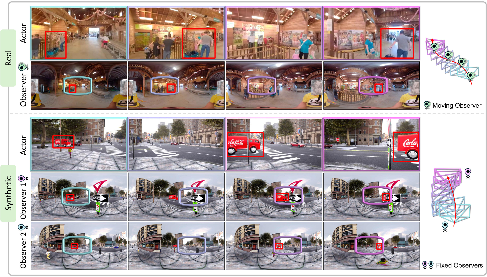
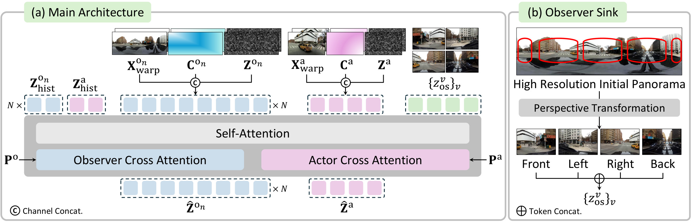
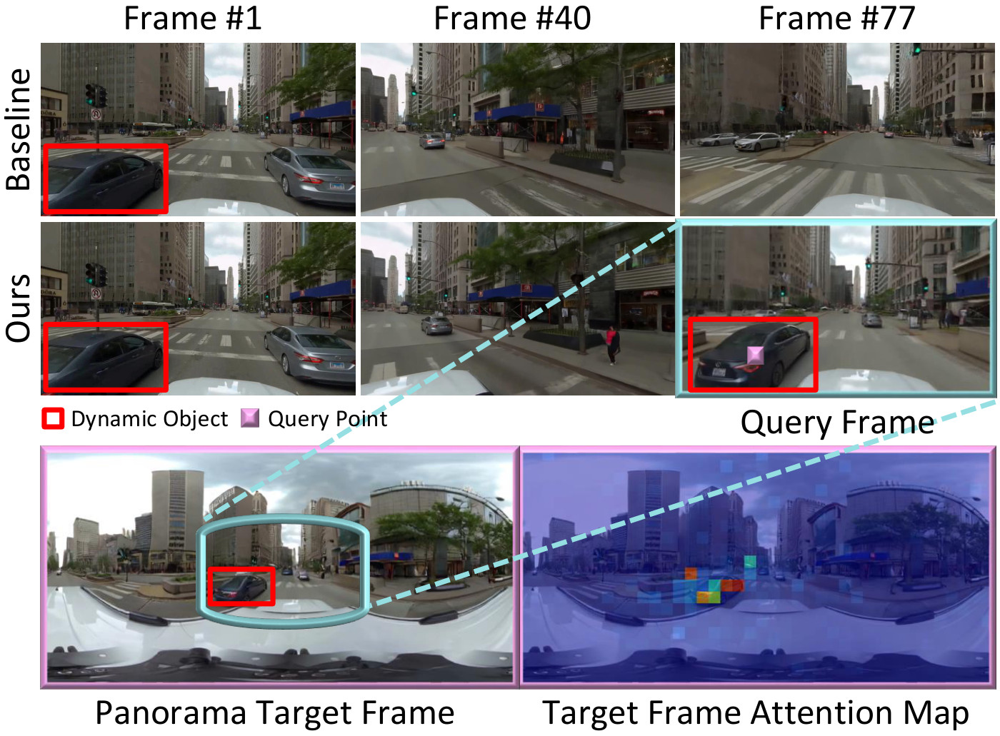

By jointly generating panoramic observer, World Observer continuously tracks and updates regions beyond the Actor’s current view.
Observers are not tied to the actor. We can choose which regions to observe independently of the actor’s position.
We can place multiple Observers where we want, and track what we cannot see from the single Actor/Observer.
World Observer is trained on temporally synchronized actor and observer videos, built from two sources. Real panoramic video grounds generation in real-world appearance, while a synthetic simulator provides the decoupled and multi-observer configurations that real captures rarely contain.

Real-world (top) and synthetic (bottom) examples with moving and two-fixed-observer configurations. Colored boxes show cross-view correspondences; the rightmost diagrams show camera configurations and trajectories.From an existing panorama corpus, we curate high-resolution videos with stable motion and stabilize each into an upright, non-rotating equirectangular observer sequence. We then render synchronized perspective actor videos from the stabilized panorama under randomized trajectories, and estimate per-frame depth with Depth Anything 3 for the geometry-aware condition. Since both views come from the same panorama, real pairs are co-located, so we use synthetic data for observers decoupled from the actor and for multi-observer settings.
We render videos in CARLA using the same stabilization and augmentation as the real data. The simulator lets us place observers independently of the actor, from one decoupled observer to several synchronized observers at different locations, providing complementary coverage.
World Observer jointly generates video streams of two roles that share a single world. An actor renders the agent's local view, while one or more panoramic observers maintain broader world state and dynamics beyond it. Both streams are generated by a single pretrained video Diffusion Transformer, each conditioned on its own text prompt and camera trajectory. Long-horizon videos are generated autoregressively in chunks, using tail latents of the previous chunk as history.

(a) World Observer jointly generates actor and panoramic observer streams with a shared DiT. (b) Observer Sink converts the high-resolution initial panorama into four perspective references for fine-grained appearance.While the actor cannot see beyond its view, the world keeps evolving. We therefore model the panorama as a time-varying observer jointly generated with the actor, rather than a static reference. Objects leaving the actor's view keep evolving in the observer, and both streams share this state, so re-entering regions stay consistent with the observer.
Actor and observer latents are concatenated into a single sequence with learnable view embeddings, and matched timesteps share the same temporal RoPE position. A query on a re-entering object can therefore attend to the observer region at the same timestep, where its out-of-view state is maintained.
The two streams also take separate prompts: the actor prompt describes events in the local view, while the observer prompt describes events across the surrounding world. The observer thus acts as both memory and control for what the actor does not see.

A query on a re-entering object attends to the observer region holding its out-of-view state, while the object fails to re-enter in the non-joint baseline.We ground both streams in the initial panorama. Using its metric depth, we warp this shared source into each stream's viewpoints along its own trajectory, so the actor and observer are geometrically consistent by construction and a Plücker raymap encodes each viewpoint. Because the observer only maintains world state rather than serving as the displayed output, we generate it at a lower resolution than the actor, which keeps full 360° coverage tractable.
A panorama maintains the state of the full surroundings but, as a distorted representation, lacks the fine appearance the actor needs when a region re-enters its view. The Observer Sink crops four perspective views, 90° apart in yaw, from the high-resolution initial panorama and appends them to the sequence as fixed, never-denoised tokens. The observer captures evolution over time, while the sink preserves appearance, so re-entering regions are rendered with updated states and fine detail.
The observer trajectory can be spatially separated from and move independently of the actor, so a region of interest stays observable wherever the actor goes. For multiple observers, we instantiate one panoramic stream per observer with an observer-specific embedding, and generate all streams jointly with the same DiT. The actor is warped from the observer panorama nearest to its current position, and the Observer Sink follows the same observer, while all observer streams keep evolving together.
How can a world model continuously observe regions beyond the actor’s current view? Video world models simulate how an environment evolves from an agent's actions, yet remain actor-centric. Once an object leaves the actor's view, they lose direct evidence of its evolution, often failing to preserve its state and dynamics upon re-entry. To address this, we introduce World Observer, which decouples observing from acting by jointly generating a perspective actor for the agent-centric view with one or more panoramic observers that watch selected world regions. This allows objects that leave the actor's view to remain visually evolving in an observer, so their updated states are reflected when they re-enter. We ground both streams in the initial panorama through warping and introduce an Observer Sink of high-resolution perspective references that restores fine appearance when a region re-enters the actor view. Since the observers are decoupled from the actor, they can be placed freely across the scene and driven by control signals to steer out-of-view evolution. To evaluate out-of-view evolution, we further introduce world-space metrics and a benchmark spanning real and synthetic scenes. World Observer substantially improves out-of-view dynamics while remaining competitive in visual fidelity, camera control, and 3D adherence.
@article{choi2026worldobserver,
title={{World Observer: Joint Actor-Observer Generation for Persistent World Modeling}},
author={Choi, Hyunwook and Chung, Dahyun and Kim, Hyunsung and Jin, Siyoon and Choi, Jinhyeok and Seo, Junyoung and Kim, Seungryong},
journal={arXiv preprint},
year={2026}
}